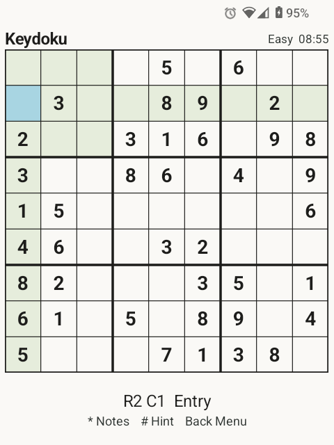

Free · Open source · Offline
Sudoku,
one key at a time.
A small Android game built for keypad phones. Take your time, make a note, and find the next number.
Android 6.0+ · Physical keypad or keyboard required

A puzzle at your pace
Four difficulty levels, unique solutions, notes, and hints. Undo a move or redo it without losing your time.
Pick up where you left off
Your puzzle, settings, and statistics stay on your device. No account, cloud sync, or Internet connection needed.
Made for physical keys
Navigate with the D-pad and enter digits with the keypad. Touch can select cells and menu items; there is no on-screen number pad.
Learn the keys
Keep your hands on the keypad.
- ↑↓←→
- Move between cells
- 1–9
- Enter a digit or toggle a note
- 0 / Delete
- Clear a cell
- *
- Toggle notes mode
- #
- Fill a hint
- Vol − / Vol +
- Undo / redo
- Back / Menu
- Open the menu or return
Simple downloads. Simple updates.
Get a signed APK from GitHub Releases. For automatic update tracking, add this repository in Obtainium:
F-Droid submission is planned. There is no confirmed listing yet.
Free, with optional support.
No ads, analytics, accounts, or network permission. Donations through Buy Me a Coffee or the in-app Bitcoin option support development. Every feature stays free.
Found something to improve? Open an issue.